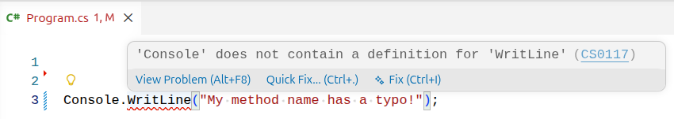
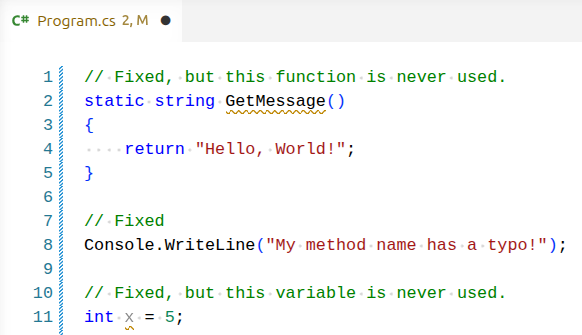

Compile-Time Errors¶
What is a Compile-Time Error?¶
The earliest stage in which we can receive error feedback is at compile-time. We see these compile-time errors in the form of:
- Build errors in the terminal output after trying to build the project
- Visual indicators in the IDE (red squiggles under code)
The compiler enforces the expectations of the language specification. If the code does not meet these expectations, the compiler will generate an error. This serves as a defense mechanism to prevent the program from reaching an invalid state at runtime.
Preventing Bugs with Compile-Time Error Checking
Compile-time error checking only works if the language supports it. Dynamically typed languages like Python and JavaScript have exploded in popularity, but they come with a tradeoff: nothing prevents code with certain classes of bugs from being shipped to production.
This is valid JavaScript, but it will fail at runtime:
function greet(name) {
console.log("Hello, " + nmae); // typo: nmae
}
greet("Terri"); // ReferenceError: nmae is not defined
In response to this tradeoff, many teams are adopting languages and tools that restore compile-time guarantees. TypeScript, for example, is a superset of JavaScript that adds static type checking, and has seen rapid adoption in recent years.
Build Output Outside of the IDE¶
Knowing how to interpret error messages is a fundamental skill. The IDE "squiggles" should be heeded when developing, but these can be finnicky and sometimes give false positives / negatives.
Other times, you may need to interpret build output that's coming from another machine, such as a CI/CD pipeline (a server with a dedicated build process). In this case the error message will appear in logs or online tools. It will be up to you to open the codebase and locate the source of the errors.
Viewing Compile-Time Errors¶
When using an IDE such as VS Code, you will often (but not always) see visual indicators of compile-time errors in the form of green and red squiggles under the code.

You can hover over the squiggle to see the error message details. Often times this is a quick fix, such as a syntax error or name typo.
If we try to build the project with the error from above in place, we will see the same error appear in the build output. Try running the snippet with the typo and check your terminal output to see the error.
mpjovanovich: dotnet build
Restore complete (0.4s)
dotnet-build-sandbox net10.0 failed with 1 error(s) (0.2s)
/home/mpjovanovich/tmp/dotnet-build-sandbox/Program.cs(3,9): error CS0117: 'Console' does not contain a definition for 'WritLine'
Build failed with 1 error(s) in 0.7s
Interpreting Build Output¶
Let's pick this output apart piece by piece.
The command that was run.
The .NET Build tool telling us that it automatically ran a restore operation prior to the build.
The project name, the version of the .NET SDK we are using, the number of errors that occurred, and the time to compile.
/home/mpjovanovich/tmp/dotnet-build-sandbox/Program.cs(3,9): error CS0117: 'Console' does not contain a definition for 'WritLine'
The path to the file that contains the error, the line number and character offset of the error, and the error message.
A summary message about the state of the build.
Diagnosing Compile-Time Errors¶
Of the above information, we are most interested in the error message for our single error. The error message line tells us the following:
- The file that has the error is
Program.cs. - The error is on line 3, character 9.
- The error message is
'Console' does not contain a definition for 'WritLine'.
Reading the error message tells us exactly where to look for the error, so that we can quickly pull up the relevant code. We don't need to scan the entire codebase.
Line Numbers and Character Offsets
The reported line numbers and character offsets may not exactly match what is in the source code. Compilers sometimes remove parts of the code during the compilation process. If you see a line number reported as an error but that code looks correct, check the lines nearby.
Fixing Compile-Time Errors¶
Let's modify Program.cs to introduce multiple errors.
// We're not allowed to use private here.
private static string GetMessage()
{
return "Hello, World!";
}
// This line has a typo
Console.WritLine("My method name has a typo!");
// No semicolon
int x = 5
We get the following build output:
mpjovanovich: dotnet build
Restore complete (0.4s)
dotnet-build-sandbox net10.0 failed with 2 error(s) (0.1s)
/home/mpjovanovich/tmp/dotnet-build-sandbox/Program.cs(2,1): error CS0106: The modifier 'private' is not valid for this item
/home/mpjovanovich/tmp/dotnet-build-sandbox/Program.cs(11,10): error CS1002: ; expected
Build failed with 2 error(s) in 0.7s
Our source code actually has three errors, but the output only reports two! Sometimes one build error will mask another. The best strategy to address this case is to fix the errors one at a time, and rebuild after each fix.
The steps to resolve our errors are: first remove the private modifier from the GetMessage method and rebuild. Then add the missing semicolon and rebuild again. Only then will we see the third error message regarding the Console.WritLine method call typo.
Build Warnings¶
Even after fixing the above errors, I see two "green squiggles" in the IDE, and the build output shows the following warnings:

mpjovanovich: dotnet build
Restore complete (0.4s)
dotnet-build-sandbox net10.0 succeeded with 2 warning(s) (0.3s) → bin/Debug/net10.0/dotnet-build-sandbox.dll
/home/mpjovanovich/tmp/dotnet-build-sandbox/Program.cs(11,5): warning CS0219: The variable 'x' is assigned but its value is never used
/home/mpjovanovich/tmp/dotnet-build-sandbox/Program.cs(2,15): warning CS8321: The local function 'GetMessage' is declared but never used
Build succeeded with 2 warning(s) in 0.9s
Build warnings indicate that the code will compile correctly, but there are potential issues that should be addressed.
In this case the warnings tell us that we have code that is not being used anywhere in the application. This may indicate that there is a logic bug from something we intended to use but forgot to call, and it also leaves a distracting mess for anyone working with the codebase.
Warnings are okay during active development, but should be addressed prior to committing and pushing code to a repository.